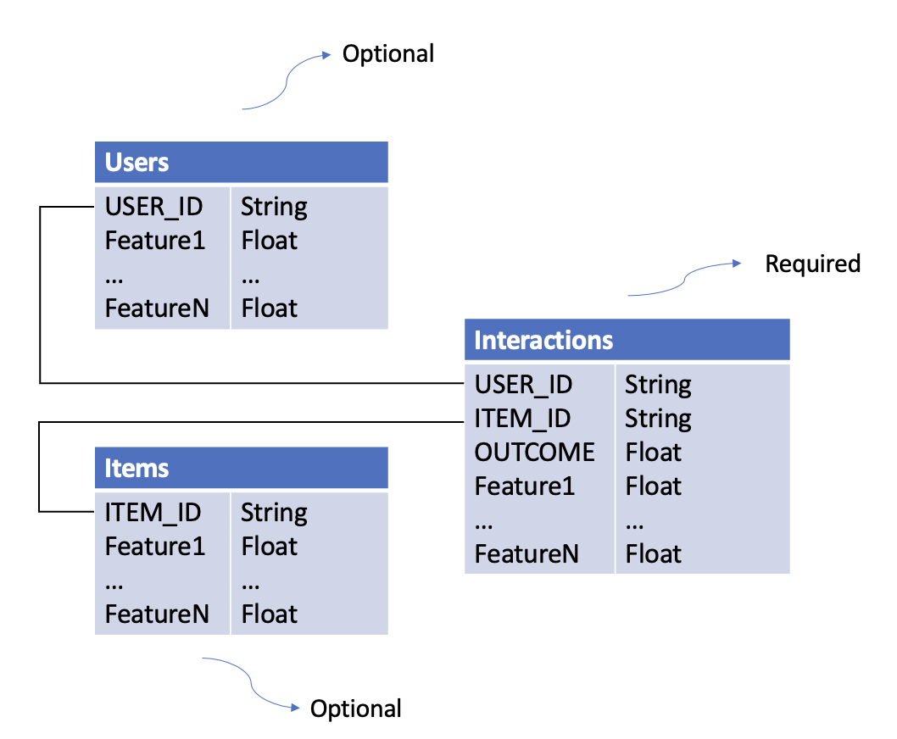

Dataset Preparation¶
Understanding how to prepare datasets is crucial for building effective recommendation systems with this library. This guide covers the required dataset structure, schemas, and preprocessing options.
Dataset Types¶
There are three types of datasets required for training recommendation models:
1. Interactions Dataset¶
Purpose: Captures what happened when users interacted with items.
Required Columns:
- USER_ID (str): Unique identifier for the user
- ITEM_ID (str): Unique identifier for the item
- OUTCOME (float): The reward/outcome of the interaction (e.g., click=1/0, revenue=$$$)
Optional Columns: Any context features (e.g., timestamp, device, location)
Example:
interactions_df = pd.DataFrame({
"USER_ID": ["user_1", "user_1", "user_2"],
"ITEM_ID": ["item_A", "item_B", "item_A"],
"OUTCOME": [1.0, 0.0, 1.0],
"timestamp": [1234567890, 1234567900, 1234567910],
"device": ["mobile", "desktop", "mobile"]
})
2. Users Dataset¶
Purpose: Contains user-level features.
Required Columns:
- USER_ID (str): Must match IDs in Interactions dataset
Optional Columns: Any user features (e.g., age, location, preferences)
Example:
users_df = pd.DataFrame({
"USER_ID": ["user_1", "user_2", "user_3"],
"age": [25, 35, 45],
"location": ["CA", "TX", "NY"],
"income": [50000, 75000, 100000]
})
3. Items Dataset¶
Purpose: Contains item-level features.
Required Columns:
- ITEM_ID (str): Must match IDs in Interactions dataset
Optional Columns: Any item features (e.g., category, price, brand)
Example:
items_df = pd.DataFrame({
"ITEM_ID": ["item_A", "item_B", "item_C"],
"category": ["electronics", "clothing", "electronics"],
"price": [299.99, 49.99, 199.99],
"brand": ["Apple", "Nike", "Samsung"]
})
Dataset Relationships¶

Key Points:
- Bold columns are required
- Additional columns become features automatically
- Datasets are joined on USER_ID and ITEM_ID
Schemas¶
Schemas define data types, validation rules, and preprocessing options for your datasets.
Why Use Schemas?¶
- Type Safety: Specify data types for each column
- Validation: Automatically validate training and inference data
- Feature Selection: Easily experiment with different feature subsets
- Preprocessing: Configure categorical encoding strategies
Schema File Format¶
Schemas are defined in YAML files:
columns:
- name: USER_ID
type: str
- name: ITEM_ID
type: str
- name: OUTCOME
type: float
- name: age
type: int
- name: state
type: str
vocab: ["CA", "TX", "NC", "NY"] # Vocabulary-based encoding
- name: zip_code
type: str
hash_buckets: 100 # Hash bucketing
Case Sensitivity
Schema definitions are case-sensitive. USER_ID ≠ user_id
Required Schemas¶
The library provides required schemas for validation:
- interactions_schema_training.yaml
- interactions_schema_inference.yaml
- users_schema.yaml
- items_schema.yaml
Categorical Preprocessing¶
The library supports two methods for handling categorical features:
1. Vocabulary-Based Encoding (One-Hot)¶
Use when: You have a predefined, small set of categories.
How it works: Creates binary columns for each category value.
Configuration:
Result: Creates columns state_0, state_1, state_2, state_unknown
Handling Unknown Values:
- Out-of-vocabulary values → state_unknown = 1
- NaN values → state_unknown = 1
Example:
# Input
state = "CA"
# Output after encoding
state_0=1, state_1=0, state_2=0, state_unknown=0
# Input
state = "FL" # Not in vocab
# Output after encoding
state_0=0, state_1=0, state_2=0, state_unknown=1
2. Hash Bucketing¶
Use when: You have many categories or an unknown number of categories.
How it works: Hashes each value into a fixed number of buckets.
Configuration:
Result: Creates columns zip_code_0 through zip_code_99
Handling NaN Values: - NaN → Filled with string "nan", then hashed
Example:
# Input
zip_code = "94025"
# After hashing to bucket 42
zip_code_42=1, zip_code_0=0, ..., zip_code_99=0
Encoding Trigger
Categorical preprocessing only activates if vocab or hash_buckets is specified and the column type is str.
Loading Datasets¶
From S3¶
from skrec.dataset.interactions_dataset import InteractionsDataset
from skrec.dataset.users_dataset import UsersDataset
from skrec.dataset.items_dataset import ItemsDataset
# Load from S3
interactions_ds = InteractionsDataset(
data_location='s3://my-bucket/data/interactions.csv',
client_schema_path='s3://my-bucket/schemas/interactions_schema.yaml'
)
users_ds = UsersDataset(
data_location='s3://my-bucket/data/users.csv',
client_schema_path='s3://my-bucket/schemas/users_schema.yaml'
)
items_ds = ItemsDataset(
data_location='s3://my-bucket/data/items.csv',
client_schema_path='s3://my-bucket/schemas/items_schema.yaml'
)
# Fetch data as pandas DataFrames
interactions_df = interactions_ds.fetch_data()
users_df = users_ds.fetch_data()
items_df = items_ds.fetch_data()
From Local Files¶
interactions_ds = InteractionsDataset(
data_location='./data/interactions.csv',
client_schema_path='./schemas/interactions_schema.yaml'
)
Using Example Datasets¶
The library includes sample datasets for experimentation:
from skrec.examples.datasets import (
sample_binary_reward_interactions,
sample_binary_reward_users,
sample_binary_reward_items,
)
# These are ready-to-use Dataset objects
interactions_df = sample_binary_reward_interactions.fetch_data()
Available Examples:
- sample_binary_reward_*: Binary classification (click/no-click)
- sample_continuous_reward_*: Regression (revenue, time-spent)
- sample_multiclass_*: Multi-class classification
- sample_multioutput_*: Multi-output scenarios
Dataset Requirements by Scorer Type¶
Different scorers have different dataset requirements:
Universal Scorer¶
- ✅ Interactions: Multiple rows per user allowed
- ✅ Users: Required
- ✅ Items: Required (item features used)
- 📊 Outcome: Binary (classification) or continuous (regression)
Independent Scorer¶
- ✅ Interactions: Multiple rows per user allowed
- ✅ Users: Optional
- ❌ Items: Not used
- 📊 Outcome: Binary or continuous
Multiclass Scorer¶
- ⚠️ Interactions: One row per user only
- ❌ Users: Not allowed
- ❌ Items: Not allowed
- 📊 Outcome: Not allowed (uses
ITEM_IDas target)
Multioutput Scorer¶
- ⚠️ Interactions: One row per user only
- ❌ Users: Not allowed
- ❌ Items: Not allowed
- 📊 Outcome: Multiple outcomes with prefix
OUTCOME_*(e.g.,OUTCOME_1,OUTCOME_click)
Learn more: Scorer Selection Guide
Best Practices¶
1. Feature Engineering¶
- Include relevant features that explain user preferences
- Normalize numerical features for better model performance
- Use categorical encoding appropriately
2. Data Quality¶
- Remove duplicate interactions
- Handle missing values consistently
- Ensure ID consistency across datasets
3. Train/Test Split¶
- Split by time for temporal validation
- Ensure no data leakage between train/test
4. Schema Management¶
- Version your schemas alongside your data
- Use consistent naming conventions
- Document feature meanings
5. Performance¶
- For large datasets, consider sampling during experimentation
- Use appropriate data formats (Parquet > CSV for large files)
- Cache preprocessed data when iterating
Common Issues¶
KeyError: 'USER_ID' not found¶
Solution: Ensure all required columns are present and spelled correctly (case-sensitive).
TypeError: Expected float, got str¶
Solution: Check your schema matches your actual data types.
ValueError: Items dataset required for Universal scorer¶
Solution: Provide an items dataset or switch to Independent scorer.
Next Steps¶
- Quick Start Tutorial - Build a recommender with example datasets
- Scorer Selection - Choose the right scorer for your data
- Architecture Overview - Understand how datasets flow through the system